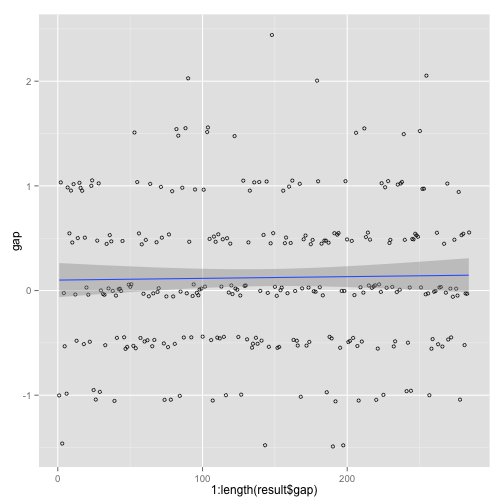

The purpose of this study shows the correlation between a variety of attribution and rating including additional service which business provides, Furthermore, this study shows rating prediction model based on attribute data. Because the attribution affecting is different according to business category characteristics, this study will progress per category.
The data used in this study is based on Yelp Challenge Dataset. Each business has several categories such as cafe, bar, spa, restaurant, etc. And each business provides a variety of additional services such as 'Wi-Fi', 'Parking area', 'Happy hour’, etc. and also has various attributions including options like ‘Appolintment.Only', ‘Smoking', 'Dos Allowed’.
Each business category provides users with needed additional service and options, which are all different and depending on the attributes of the business, the service quality will be different by each and every one of users.
This study finds out about the main attributies that users are considering of each business category, and finds what correlation that attributes and rating. Also it presents a model, which can predict the rating, by different attributes of each business category.
From this, people who do business can provide customers with better experince because, they can add additional service and options to the one's business caterory.
Data can be found at Yelp Datset challenge. The data is json format and organized with business information, review information, user information, check-in information and tip information.
The processing sources of parsing text(json) file downloaded from Yelp to "data.frame" can be found on https://github.com/keepcosmos/yelp-data-analyze
Parsed data via the above process can be used after converting/saving in Rda file.
source('data_loader.R')
bizBase <- yelp.readBizBase()
bizCat <- yelp.readBizCategory()
bizAttr <- yelp.readBizAttr()
business_id, category exist in the category data.frame, and one business can have several categories.head(bizCat, 5)
## business_id category
## 1: vcNAWiLM4dR7D2nwwJ7nCA Doctors
## 2: vcNAWiLM4dR7D2nwwJ7nCA Health & Medical
## 3: UsFtqoBl7naz8AVUBZMjQQ Nightlife
## 4: cE27W9VPgO88Qxe4ol6y_g Active Life
## 5: cE27W9VPgO88Qxe4ol6y_g Mini Golf
summary(bizCat$category)[1:10]
## Restaurants Shopping Food Beauty & Spas
## 21892 8919 7862 4738
## Nightlife Bars Health & Medical Automotive
## 4340 3628 3213 2965
## Home Services Fashion
## 2853 2566
attrs <- colnames(select(bizAttr, -business_id))
attrs[1:10]
## [1] "By.Appointment.Only" "Happy.Hour" "Accepts.Credit.Cards"
## [4] "Good.For.Groups" "Outdoor.Seating" "Price.Range"
## [7] "Good.for.Kids" "Alcohol" "Noise.Level"
## [10] "Has.TV"
head(select(bizBase, business_id, name, stars), 5)
## business_id name stars
## 1: vcNAWiLM4dR7D2nwwJ7nCA Eric Goldberg, MD 3.5
## 2: UsFtqoBl7naz8AVUBZMjQQ Clancy's Pub 3.5
## 3: cE27W9VPgO88Qxe4ol6y_g Cool Springs Golf Center 2.5
## 4: HZdLhv6COCleJMo7nPl-RA Verizon Wireless 3.5
## 5: mVHrayjG3uZ_RLHkLj-AMg Emil's Lounge 4.5
Each business has several categories. The main attributes observed differ in every business category. For example, in the category of Bars, Wi-Fi, Noize Level, Happy Hour are easily observed in many businesses, but attributes such as hair type is not observed.
We can filter effective attributes by category. According to this attributes, we can derive the correlation with stars. The number of reviews is also considered importantly.
Because the property which is extracted per each category is different, this study especially uses the example of Coffee & Tea category.
bizIds <- bizCat[bizCat$category == 'Coffee & Tea']$business_id
bizBase <- bizBase[bizBase$business_id %in% bizIds]
bizBase <- select(bizBase, business_id, review_count, stars)
bizAttr <- bizAttr[bizAttr$business_id %in% bizIds]
dataset <- merge(bizBase, bizAttr, by = 'business_id')
dataset <- dataset[dataset$review_count > 5]
dataset <- select(dataset, -review_count)
cutoff <- as.integer(length(dataset$business_id) * 2 / 3)
liveCols <- colSums(is.na(dataset)) < cutoff
liveColNames <- colnames(dataset)[liveCols]
dataset <- select(dataset, one_of(liveColNames))
dataset <- select(dataset, -nearZeroVar(dataset))
dataset <- dataset[, lapply(.SD, as.character)]
dataset[is.na(dataset)] <- 'NOT OBSERVED'
dataset <- dataset[, lapply(.SD, as.factor)]
dataset$business_id <- as.character(dataset$business_id)
The most meaningful business attributes of the Coffee & Tea category are as follows.
str(dataset)
## Classes 'data.table' and 'data.frame': 1440 obs. of 10 variables:
## $ business_id : chr "_-PU0gOesYm38B1FZY4SLg" "_9JDgUdXbCn1Vx-nj49VJg" "_AwvPzaNPGQ_QZSWgsfOiw" "_B1Q6lSkcWSSTVs8w4xv5A" ...
## $ stars : Factor w/ 8 levels "1.5","2","2.5",..: 5 7 5 6 6 6 3 7 7 7 ...
## $ Accepts.Credit.Cards : Factor w/ 3 levels "FALSE","NOT OBSERVED",..: 3 3 3 3 3 3 3 3 3 3 ...
## $ Outdoor.Seating : Factor w/ 3 levels "FALSE","NOT OBSERVED",..: 1 3 3 1 3 3 1 3 1 1 ...
## $ Price.Range : Factor w/ 5 levels "1","2","3","4",..: 2 2 1 3 1 1 2 1 1 1 ...
## $ Wi.Fi : Factor w/ 4 levels "free","no","NOT OBSERVED",..: 1 1 1 1 1 1 2 1 1 2 ...
## $ Parking.garage : Factor w/ 3 levels "FALSE","NOT OBSERVED",..: 1 1 1 3 1 1 3 1 1 1 ...
## $ Parking.street : Factor w/ 3 levels "FALSE","NOT OBSERVED",..: 1 1 1 1 1 3 1 1 1 1 ...
## $ Parking.lot : Factor w/ 3 levels "FALSE","NOT OBSERVED",..: 3 3 3 1 3 1 1 3 1 1 ...
## $ Wheelchair.Accessible: Factor w/ 3 levels "FALSE","NOT OBSERVED",..: 2 3 2 3 3 2 2 2 3 2 ...
## - attr(*, ".internal.selfref")=<externalptr>
Model an prediction algorithm through the relevant data. Since the relevant data is to measure the correlation between attributes and stars, classification modeling will be used, and rpart, a type of the algorithm, will be adopted.
factor type.set.seed(123)
trainIndex <- createDataPartition(dataset$stars, p = 0.8, list = F)[, 1]
trainData <- dataset[trainIndex]
trainData <- select(trainData, -business_id)
testData <- dataset[-trainIndex]
library('rpart')
model <- rpart(stars ~ ., data = trainData, method = 'class',
control = rpart.control(minsplit=30, cp=0.001))
pred <- predict(model, testData, type = 'class')
result <- data.table(origin = as.numeric(as.character(testData$stars)),
pred = as.numeric(as.character(pred)))
result <- mutate(result, gap = pred - origin)
summary(result$gap)
## Min. 1st Qu. Median Mean 3rd Qu. Max.
## -1.5000 -0.5000 0.0000 0.1232 0.5000 2.5000
postResample(result$pred, result$origin)
## RMSE Rsquared
## 0.70710678 0.03560378
sp <- ggplot(result, aes(x = 1:length(result$gap), y = gap))
sp <- sp + geom_point(position = position_jitter(width=.3, height = .06),
alpha = 0.8, shape=21, size=1.5)
sp + stat_smooth(method=lm)

Cases in which the error range of the ratings is below 0.5 is 72.1830986% of all data.
The error level is comparatively high when using postResample to measure. But while considering the fact that the relevant value is rating, the difference between the estimation and the actual measured value is examined.
As shown on the graph, the difference between the estimation and actual measured value is mostly concentrated between -0.5 ~ 0.5, and since the median value and average value are very close to 0, the data is reliable.
Therefore, the relevant attributes can be distinguished as necessary attributes for receiving good ratings in the "Coffee & Tea" category.